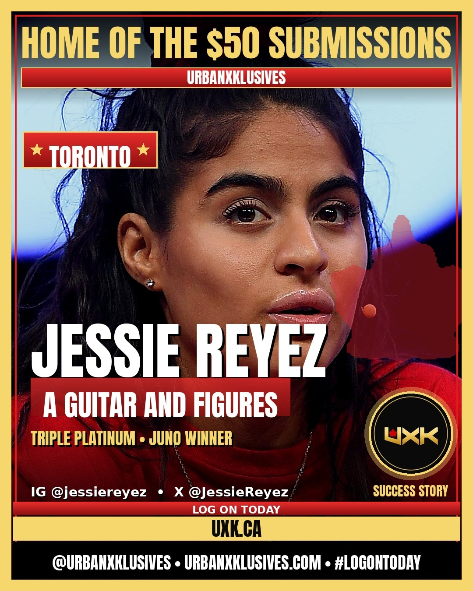
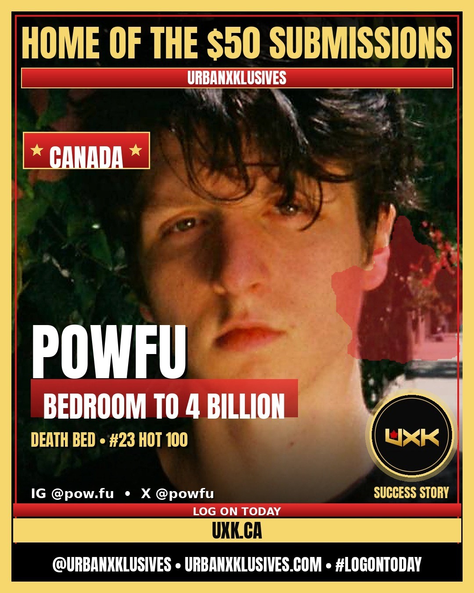
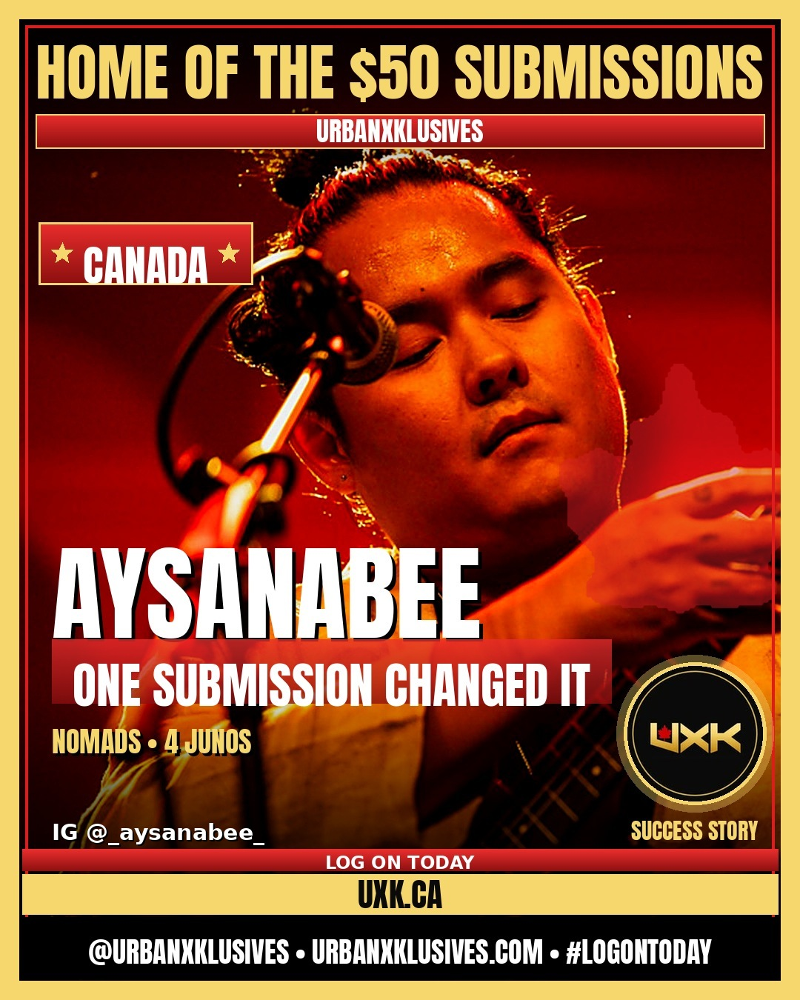
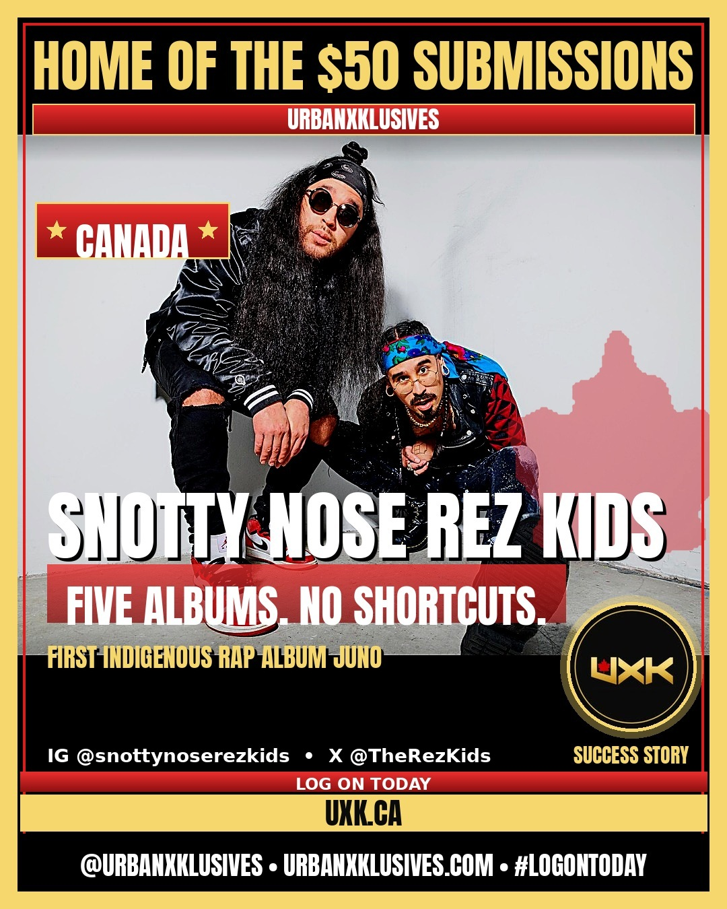
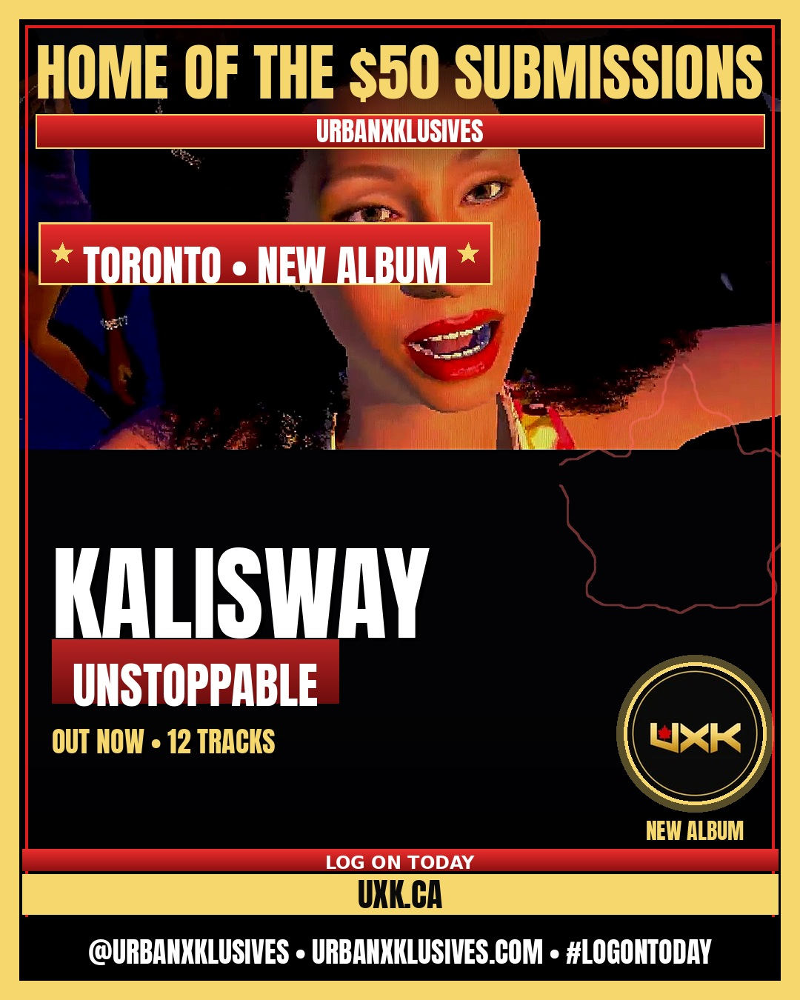

XKLUSIVE
THE UXK HEADLINER
The artist Trav has backed since 2015 — eleven years deep. St. Ann, Jamaica's own Broomy Boss: "Bad Youth" is the latest video, "Doom" with Popcaan is the biggest link-up of his career. Press play. This is the main entry.
NEW: BAD YOUTH · DOOM FT. POPCAAN · BAD DJ EP

$49 Limited Submission Drop

Worldstar & Q Live in Toronto

Believe In Us
UXK LIVE
CHECKING LIVE STATUS…CATCH ME LIVE
This is the main place you'll see me live online — streaming on Kick and on TikTok Live. Pull up, tap in, be part of the KONNECT in real time.
Search UrbanXklusives

THREE SONGS, NO FACE, NO NAME. THEN THE WHOLE WORLD KNEW.
NOV 12, 2026 · BY TRAV MANE
The Weeknd uploaded three tracks to YouTube anonymously from Scarborough. Drake's blog found them. The rest is history.
KEY POINTS
WHERE THEY WERE: A kid from Scarborough who dropped out at 17 and lived in shared houses — one in Parkdale became the house of balloons.
THE VISION: Let the music speak first — no face, no name, just the songs.
HOW THEY PERSEVERED: Three anonymous songs, then a free mixtape on his own label — on Drake's Take Care inside a year.
THE PROOF: More than 75 million albums sold worldwide.
Abel Tesfaye was a kid from Scarborough, Toronto, raised by Ethiopian immigrant parents. At 17 he dropped out of school and left home, living in shared houses across the city with his friends. One of those houses, a rented place in Parkdale, became the house of balloons.
Late in 2010, three songs appeared on YouTube under the name The Weeknd. No photo. No press release. No explanation. Nobody knew who the voice belonged to, or whether it was one person or a group. Drake's OVO blog posted them that December. The mystery only made people listen harder.
On March 21, 2011, the free mixtape House of Balloons arrived on his own website, under his own label, XO. He made it with Toronto producers Doc McKinney and Illangelo. It landed on the Polaris Music Prize long list, and Pitchfork called it the most interesting thing happening in R&B.
That July he played his first live show at the Mod Club in Toronto. Drake came backstage. By November, Abel had contributed to four songs on Drake's Take Care, including "Crew Love." He had gone from anonymous uploads to the biggest album in the country in under a year.
Since then he has sold more than 75 million albums worldwide. Billboard later named "Blinding Lights" the best-charting song of all time. It all started with three songs and no name, from a kid in Scarborough who let the music speak first.
The lesson: You do not need a face, a label, or a budget to start. You need songs good enough that people pass them on. The music goes first. The name follows.
Tell Your Story: Got a story like this? A $50 submission puts your story on UrbanXklusives — the blog, the Short, the blast. UXK.CA. Log on today. UrbanXklusives — home of the $50 submissions.
📖 SUCCESS STORIES · LOCAL STORY 1 OF 12 · LOCAL VS GLOBAL · TELL YOUR STORY — $50 · #URXKLUSIVEKONNECT
BRAMPTON TO OVO: A DM CHANGED EVERYTHING
NOV 12, 2026 · BY TRAV MANE
Roy Woods was a 19-year-old from Brampton posting songs on SoundCloud. Then OVO's Oliver El-Khatib slid into his DMs.
KEY POINTS
WHERE THEY WERE: A teenager from Brampton posting songs on SoundCloud.
THE VISION: Keep sending his songs until the right ears heard them.
HOW THEY PERSEVERED: He kept sending music to OVO's Oliver El-Khatib until the signing came.
THE PROOF: His first EP, Exis, pulled 84 million streams on SoundCloud within a year.
Denzel Spencer grew up in Brampton, Ontario, a kid of Guyanese descent in one of the most diverse cities in the country. He started posting songs on SoundCloud as a teenager. One of them, "Got It," went viral. A manager named DATA-X found him on SoundCloud in 2013 and started building with him.
Then the DM came. Oliver El-Khatib, Drake's manager and the co-founder of OVO Sound, heard Roy's songs and hit him up, asking him to keep sending music. Roy did. They talked about life. One day Oliver brought up signing to OVO, and that was that.
He signed to OVO Sound in 2015 and debuted "Drama" featuring Drake on OVO Sound Radio that July. His first EP, Exis, came out on July 31, 2015. It went to number 10 on Billboard's US R&B chart and pulled 84 million streams on SoundCloud and 36 million on Spotify within a year.
Waking at Dawn followed in July 2016 and went to number 6 on the US R&B chart. Then came the Summer Sixteen Tour — more than 50 shows with Drake and Future. His debut album, Say Less, arrived in December 2017 and went to number 11 on the US R&B chart, followed by sold-out tours across North America, Europe, and the UK.
He was 19 when the world met him. He never left his roots behind — dancehall and Afrobeats run through his music, the sound of the city that raised him.
The lesson: Your city is your sound. Post the songs, keep sending them, and answer the DM when it comes. Brampton to OVO to the world — it starts on SoundCloud.
Tell Your Story: Got a story like this? A $50 submission puts your story on UrbanXklusives — the blog, the Short, the blast. UXK.CA. Log on today. UrbanXklusives — home of the $50 submissions.
📖 SUCCESS STORIES · LOCAL STORY 2 OF 12 · LOCAL VS GLOBAL · TELL YOUR STORY — $50 · #URXKLUSIVEKONNECT
A SCARBOROUGH SCHOOL KID MADE "KILLAMONJARO" AND WENT PLATINUM
NOV 12, 2026 · BY TRAV MANE
Killy started rapping in secondary school and posted his first tracks on SoundCloud. One song changed his life.
KEY POINTS
WHERE THEY WERE: A secondary school kid in Toronto, rapping since 2015, posting his first tracks on SoundCloud.
THE VISION: Keep uploading, track after track, until one song broke through.
HOW THEY PERSEVERED: Nobody was watching yet — he kept going anyway, building a small following one upload at a time.
THE PROOF: "Killamonjaro" was certified Platinum in Canada in January 2019.
Khalil Tatem fell in love with hip-hop while he was still in secondary school in Toronto. He started rapping in 2015 and uploaded his first tracks to SoundCloud the next year. Nobody was watching yet. He kept going anyway, track after track, building a small following one upload at a time.
Then came "Killamonjaro." He released it in February 2017, produced by Gray Jacques, and it went viral. Drake's OVO Sound Radio gave it a feature. Adam22's No Jumper brought him in for an interview. His independent label, Secret Sound Club, landed a major distribution deal off the strength of one song.
"Killamonjaro" was certified Platinum in Canada in January 2019. His second album, Light Path 8, came out that June and landed at number 24. He earned a JUNO nomination, and the Scarborough kid who started on SoundCloud was playing rooms he used to dream about.
In 2022 he left Epic Records and went independent again, dropping the single "CEO" that August. The circle closed: back to his own label, his own terms, the same way he started.
He was 19 when "Killamonjaro" broke. He did not have a major label behind him. He had SoundCloud, a producer, and a song people could not stop playing.
The lesson: One song is enough if it is the right one. Post it, let it travel, and keep your label yours. Independence is not a stepping stone. It is a destination.
Tell Your Story: Got a story like this? A $50 submission puts your story on UrbanXklusives — the blog, the Short, the blast. UXK.CA. Log on today. UrbanXklusives — home of the $50 submissions.
📖 SUCCESS STORIES · LOCAL STORY 4 OF 12 · LOCAL VS GLOBAL · TELL YOUR STORY — $50 · #URXKLUSIVEKONNECT

JANE AND FINCH TO DRAKE'S TOUR: PRESSA BUILT HIS OWN LABEL
NOV 12, 2026 · BY TRAV MANE
Pressa uploaded his first tracks to YouTube and SoundCloud from Jane and Finch. "Novacane" took him to Drake's tour and a Sony deal.
KEY POINTS
WHERE THEY WERE: The Driftwood neighbourhood of Jane and Finch, Toronto, uploading tracks to YouTube and SoundCloud from 2015.
THE VISION: Build his own label, Blue Feathers Records — and bring it with him when the deal came.
HOW THEY PERSEVERED: Uploaded from his neighbourhood and earned the co-signs because the music was already moving.
THE PROOF: "Novacane" has more than 25 million views on YouTube.
Quinton Armani Gardner grew up in the Driftwood neighbourhood of Jane and Finch, Toronto, the son of a Filipino mother and a Jamaican father. In 2015 he started uploading tracks to YouTube and SoundCloud from his neighbourhood.
His song "Deadmihana" came out in January 2016 and pulled 2.6 million views on YouTube. Meek Mill and Drake noticed. Then came "Novacane," produced by Murda Beatz, on his debut mixtape Press Machine in March 2017. The song took off — more than 25 million YouTube views — and Drake's co-sign followed. The Weeknd backed him early too. The co-signs came because the music was already moving.
In 2017 he opened for Drake on the Boy Meets World Tour. That December, "Canada Goose" featuring Tory Lanez went platinum. His album Prestige hit number 1 on the iTunes Canada hip-hop charts in 2019.
Through all of it he built his own label, Blue Feathers Records. In May 2020 he signed with Sony Music Canada alongside Blue Feathers, releasing "96 Freestyle" to mark the deal. He did not just get signed. He brought his own label with him.
He was 19 when the breakout came. A kid from Jane and Finch, uploading songs from his neighbourhood, who built a label, toured with Drake, and signed a major deal on his own terms.
The lesson: Build your own table. Upload the songs, earn the co-sign, and when the deal comes, bring your label with you. Positive over negative, every time.
Tell Your Story: Got a story like this? A $50 submission puts your story on UrbanXklusives — the blog, the Short, the blast. UXK.CA. Log on today. UrbanXklusives — home of the $50 submissions.
📖 SUCCESS STORIES · LOCAL STORY 5 OF 12 · LOCAL VS GLOBAL · TELL YOUR STORY — $50 · #URXKLUSIVEKONNECT

A GUITAR, A COMMUNITY PROGRAM, AND "FIGURES"
NOV 12, 2026 · BY TRAV MANE
Jessie Reyez learned guitar as a kid in Toronto, came home to a community program, and wrote the song that changed everything.
KEY POINTS
WHERE THEY WERE: A guitar-playing kid in Toronto who left for Miami, came home in 2014, and joined The Remix Project's Academy of Recording Arts.
THE VISION: Write the truth — an honest song about a heartbreak that was still raw.
HOW THEY PERSEVERED: Came home, started over in a community program, and found the room, the guidance, and the people.
THE PROOF: "Figures" went triple platinum — more than 70 million streams by March 2018.
Jessica Reyez was born in Toronto to Colombian parents. She played guitar as a child and wrote her own songs in high school. After graduating she left for Miami, chasing the dream. It did not work out. In 2014 she came home to Toronto.
Coming home was the move. She was accepted into The Remix Project's Academy of Recording Arts, a community program for young artists. There she got mentorship from Daniel Daley of dvsn, and her first collaboration, with Chicago rapper King Louie. The program gave her the room, the guidance, and the people.
In 2016 she released "Figures," a stripped-back acoustic song about a heartbreak that was still raw. The FADER premiered it. The song climbed to number 58 on the Canadian Hot 100 and went triple platinum. By March 2018 it had more than 70 million streams worldwide.
Her debut EP, Kiddo, came out in 2017. She performed "Figures" on The Tonight Show and at the BET Awards that year. In 2018 she won Breakthrough Artist of the Year at the JUNO Awards, and became the first featured performer in YouTube's Artist on the Rise program. Her next EP earned a Grammy nomination.
She was 25 when "Figures" broke. She had already left, come back, and started over. She also used her voice to speak up about how the industry treats young artists — because the story is not just the song, it is what you do with the platform.
The lesson: Coming home is not giving up. Find your people, find your program, and write the truth. A guitar and an honest song can take you from Toronto to the world.
Tell Your Story: Got a story like this? A $50 submission puts your story on UrbanXklusives — the blog, the Short, the blast. UXK.CA. Log on today. UrbanXklusives — home of the $50 submissions.
📖 SUCCESS STORIES · LOCAL STORY 6 OF 12 · LOCAL VS GLOBAL · TELL YOUR STORY — $50 · #URXKLUSIVEKONNECT
FROM THE CHURCH CHOIR IN OSHAWA TO A GRAMMY
NOV 12, 2026 · BY TRAV MANE
Daniel Caesar grew up singing in his father's church in Oshawa. He left home as a teen, slept on couches, and self-released his way to a Grammy.
KEY POINTS
WHERE THEY WERE: Singing in his father's church in Oshawa, Ontario — son of a gospel singer and pastor.
THE VISION: Chase music in Toronto — he left home as a teen with just the voice he built in church.
HOW THEY PERSEVERED: Slept on friends' couches, a night or two in Trinity Bellwoods Park — no money, no plan, just the voice.
THE PROOF: Won a Grammy for Best R&B Performance — "Best Part" with H.E.R.
Ashton Simmonds was born in Scarborough and raised in Oshawa, Ontario, the son of a gospel singer and pastor. His father, Norwill Simmonds, recorded gospel albums of his own — the music ran in the family long before Daniel picked it up. He grew up in the Seventh-day Adventist Church, singing before his father's congregation. Gospel was the air he breathed.
As a teenager he clashed with his family and left home to chase music in Toronto. He lived on friends' couches. For a night or two, he slept in Trinity Bellwoods Park. He had no money and no plan, just the voice he had built in church.
In September 2014, at 19, he self-released his debut EP, Praise Break, on SoundCloud. Pilgrim's Paradise followed in November 2015 and was longlisted for the Polaris Music Prize. "Get You," featuring Kali Uchis, came out in 2016 and spread through YouTube covers and social shares, one person at a time.
His debut album, Freudian, arrived in August 2017. It earned Grammy nominations and won Best R&B Performance for "Best Part," his song with H.E.R. The album carried "We Find Love," "Blessed," and "Japanese Denim" alongside "Get You." The kid who sang in his father's church in Oshawa was holding a Grammy.
He is still going. His fourth album, Son of Spergy, came out in October 2025, with a headline arena run across Asia and North America in 2026. The road from the choir to the arena was long, and he walked every step of it.
The lesson: Your roots are your sound. Church, family, struggle — it all goes into the music. Leave home if you must, but carry where you came from with you.
Tell Your Story: Got a story like this? A $50 submission puts your story on UrbanXklusives — the blog, the Short, the blast. UXK.CA. Log on today. UrbanXklusives — home of the $50 submissions.
📖 SUCCESS STORIES · LOCAL STORY 7 OF 12 · LOCAL VS GLOBAL · TELL YOUR STORY — $50 · #URXKLUSIVEKONNECT

A BEDROOM IN BC, A BORROWED BEAT, AND 4 BILLION TIKTOK PLAYS
NOV 12, 2026 · BY TRAV MANE
Powfu recorded "death bed" in his basement and uploaded it to SoundCloud. It took a year to clear the sample, then TikTok took it to the world.
KEY POINTS
WHERE THEY WERE: A high school kid in Mission, BC, recording in his basement and uploading to SoundCloud.
THE VISION: Write over a beat he found on SoundCloud and put the song out himself.
HOW THEY PERSEVERED: The sample was not cleared — he waited through about a year of legal work for the song to come out properly.
THE PROOF: "death bed" powered more than 4.1 billion plays on TikTok in March 2020 alone.
Isaiah Faber was a high school kid in Mission, British Columbia, recording in his basement and uploading his songs to SoundCloud. He found a beat on SoundCloud made by a producer called Otterpop. It sampled "Coffee," a 2017 song by beabadoobee. He wrote over it from the perspective of a man on his deathbed, saying goodbye.
He self-released "death bed (coffee for your head)" in February 2019. But the sample was not cleared, and he knew it. In April 2019 he tweeted, "I'm scared I'll get in trouble from the sample I use in it." It took about a year of legal work, through Columbia Records and Robots + Humans, before the song could come out properly.
Then TikTok found it. In March 2020 alone, the song powered more than 4.1 billion plays on TikTok. The commercial release came on February 8, 2020. The song peaked at number 23 on the Billboard Hot 100 and number 4 in the UK. By June 2021 it had passed a billion plays on Spotify. And even after the deal, he told Ones to Watch, "I still sit alone in my room whenever I want to record something." The room never changed. The audience did.
He made it in a bedroom, on a borrowed beat, with a sample he did not own. The music was real. The lesson is real too: clear your samples, because the song you love can sit for a year while the paperwork catches up.
The lesson: The bedroom is a studio. But the business is real — clear your samples before you upload. A year of waiting is a year the world is not hearing your song.
Tell Your Story: Got a story like this? A $50 submission puts your story on UrbanXklusives — the blog, the Short, the blast. UXK.CA. Log on today. UrbanXklusives — home of the $50 submissions.
📖 SUCCESS STORIES · LOCAL STORY 8 OF 12 · LOCAL VS GLOBAL · TELL YOUR STORY — $50 · #URXKLUSIVEKONNECT
HE MARKETED A SONG ON TINDER AND CRAIGSLIST. IT HIT A BILLION STREAMS.
NOV 12, 2026 · BY TRAV MANE
bbno$ was a swimmer from Vancouver until an injury ended it. He made beats in GarageBand, posted on SoundCloud, and turned "Lalala" into the first TikTok hit.
KEY POINTS
WHERE THEY WERE: A competitive swimmer in Vancouver until an injury ended it — then making rap and beats in GarageBand with friends, just for fun.
THE VISION: Put his song everywhere — even the apps nobody else was using for music.
HOW THEY PERSEVERED: Marketed "Lalala" himself across Tinder, Instagram, TikTok, and Craigslist — no big budget, no label machine.
THE PROOF: "Lalala" passed a billion streams and went triple platinum in the US.
Alexander Gumuchian was a competitive swimmer in Vancouver, British Columbia. Then an injury ended that path. In 2014 he started making rap and beats with his friends in GarageBand, just for fun. He posted his music to SoundCloud from 2016, under the name bbnomula.
In 2017 he made the Baby Gravy EP with Yung Gravy, and the two built a partnership on humour and internet culture that is still going. But the moment came in 2019, with "Lalala," a song he made with producer Y2K.
Here is the part nobody else did: he and Y2K marketed the song themselves, across Tinder, Instagram, TikTok, and Craigslist. No big budget. No label machine. Just a catchy song and the willingness to put it everywhere, including the apps nobody else was using for music.
It worked. "Lalala" became the first-ever TikTok hit, according to the JUNOS. It went to number 10 on the Canadian Hot 100, charted in more than 20 countries, passed a billion streams, and was certified triple platinum in the United States in March 2023. In 2025 he won the JUNO Fan Choice Award.
He was 24 when it broke. A swimmer who lost his sport, a kid with GarageBand and a joke, who figured out that the internet is the label now.
The lesson: The internet is the label. Post it everywhere, even the places nobody else is looking. A billion streams started with a song and a Craigslist ad.
Tell Your Story: Got a story like this? A $50 submission puts your story on UrbanXklusives — the blog, the Short, the blast. UXK.CA. Log on today. UrbanXklusives — home of the $50 submissions.
📖 SUCCESS STORIES · LOCAL STORY 9 OF 12 · LOCAL VS GLOBAL · TELL YOUR STORY — $50 · #URXKLUSIVEKONNECT

SHE WROTE SONGS IN HER BEDROOM AT 14. BY 17 SHE WAS ON THE HOT 100.
NOV 12, 2026 · BY TRAV MANE
Tate McRae was a dancer from Calgary with a YouTube channel. Then she started writing songs in her bedroom, and "One Day" changed everything.
KEY POINTS
WHERE THEY WERE: A competitive dancer from Calgary, writing songs in her bedroom at 14 for a weekly YouTube series.
THE VISION: Turn her dance channel into a songwriting channel — one original song a week.
HOW THEY PERSEVERED: A new original song every week in her bedroom, posted to the same channel — "One Day" passed 40 million views.
THE PROOF: "you broke me first" hit No. 17 on the Hot 100 and stayed on the chart for 38 weeks.
Tate McRae was born in Calgary, Alberta, and grew up a competitive dancer. At 13 she was a finalist on So You Think You Can Dance, the first Canadian finalist on the American show. She had run a YouTube channel since 2011, posting dance videos.
But in 2017, at 14, she tried something else. She started a weekly series called "Create With Tate," writing and recording original songs in her bedroom and posting them to the same channel. The first song in the series was "One Day." It passed 40 million views. She self-released it as a single.
RCA Records signed her in August 2019, when she was 16. Her first EP, All the Things I Never Said, came out in January 2020. That April she released "you broke me first," and it took off on TikTok. The song went to number 17 on the Billboard Hot 100 and stayed on the chart for 38 weeks. It was top 10 in the UK, Australia, and the Netherlands.
Her second EP, Too Young to Be Sad, became the most-streamed female EP of 2021 on Spotify. TV gave her exposure. But YouTube gave her a career. The dance channel became a songwriting channel, and the bedroom became the studio. She was 14 when she started writing the songs. She was 17 when the world was singing them.
The lesson: Your channel is your stage. Start with what you have, in the room you are in. A bedroom song at 14 can be a Hot 100 hit at 17.
Tell Your Story: Got a story like this? A $50 submission puts your story on UrbanXklusives — the blog, the Short, the blast. UXK.CA. Log on today. UrbanXklusives — home of the $50 submissions.
📖 SUCCESS STORIES · LOCAL STORY 10 OF 12 · LOCAL VS GLOBAL · TELL YOUR STORY — $50 · #URXKLUSIVEKONNECT

FROM A FLY-IN FIRST NATION TO JUNO HISTORY
NOV 12, 2026 · BY TRAV MANE
Aysanabee is Oji-Cree, from Sandy Lake First Nation. He paid his way into a music summit with a crypto trade, and "Nomads" made him the first Indigenous artist to top the alt-rock chart.
KEY POINTS
WHERE THEY WERE: Oji-Cree, Sucker Clan of Sandy Lake First Nation, a remote fly-in community — taught himself guitar in Kamnistiquia and Thunder Bay.
THE VISION: Get his music in front of the right people — he submitted to the International Indigenous Music Summit.
HOW THEY PERSEVERED: Paid the submission fee with money from a crypto trade — one submission changed everything.
THE PROOF: Four JUNO Awards — the first Indigenous artist to win Songwriter of the Year.
Evan Pang is Oji-Cree, Sucker Clan of Sandy Lake First Nation, a remote fly-in community in Northwestern Ontario. He grew up in Kamnistiquia and Thunder Bay, and taught himself to play guitar and write songs.
He wanted to get his music in front of the right people, so he submitted to the International Indigenous Music Summit. He paid the submission fee with money he made on a cryptocurrency trade. That one submission changed everything. He was discovered there and became the first outside artist signed to Ishkōdé Records, an Indigenous women-owned label launched in 2021 by Amanda Rheaume and ShoShonna Kish of Digging Roots.
His single "Nomads" came out in August 2022. It went to number 1 on the CBC Music Top 20, and in March 2023 it topped the Mediabase Canada Alternative Rock chart — the first time an Indigenous artist had ever topped that chart.
His debut album, Watin, arrived in November 2022. It is named for his grandfather, and it weaves in phone recordings of his grandfather, made during the pandemic, talking about family history. CBC Music named Watin one of the 22 best Canadian albums of 2022. The album was shortlisted for the 2023 Polaris Music Prize.
In March 2024 he became the first Indigenous artist to win both Songwriter of the Year and Alternative Album of the Year at the JUNO Awards. His Here and Now EP carried the songs that won him Songwriter of the Year. His next album, Edge of the Earth, won two more JUNOs in 2026. Four JUNOs in total — from a kid who taught himself guitar and bet on one submission.
The lesson: One submission can change your life. Bet on yourself, pay the fee, send the music. From a fly-in community to JUNO history — the distance is real, and so is the road.
Tell Your Story: Got a story like this? A $50 submission puts your story on UrbanXklusives — the blog, the Short, the blast. UXK.CA. Log on today. UrbanXklusives — home of the $50 submissions.
📖 SUCCESS STORIES · LOCAL STORY 11 OF 12 · LOCAL VS GLOBAL · TELL YOUR STORY — $50 · #URXKLUSIVEKONNECT

FIVE INDEPENDENT ALBUMS, THEN JUNO HISTORY
NOV 12, 2026 · BY TRAV MANE
Snotty Nose Rez Kids are Haisla rappers from Kitamaat Village, BC. They released five albums on their own, toured the world, and became the first Indigenous artists to win Rap Album of the Year at the JUNOs.
KEY POINTS
WHERE THEY WERE: Haisla rappers from Kitamaat Village, BC, who moved to Vancouver and started making music.
THE VISION: Build a catalogue on their own terms — hip-hop built on humour, anger, cultural pride, and their people's stories.
HOW THEY PERSEVERED: Five independent albums, a 100-show tour across three continents — no viral moment, just work.
THE PROOF: First Indigenous artists ever to win Rap Album of the Year at the JUNOs.
Darren "Young D" Metz and Quinton "Yung Trybez" Nyce are Haisla rappers from Kitamaat Village, British Columbia. They moved to Vancouver and started making music — hip-hop built on humour, anger, cultural pride, and the stories of their people.
There was no viral moment. There was work. Their self-titled debut and The Average Savage came out in 2017, and The Average Savage was shortlisted for the 2018 Polaris Music Prize. Trapline followed in May 2019, released independently, and earned another Polaris shortlist and a 100-show tour across three continents. Trapline featured "Boujee Natives," a song that became an anthem.
Every album was long- or shortlisted for the Polaris Music Prize — four shortlists in total. Five albums, all independent, all building.
In 2023 they signed with Sony Music Canada. Their major-label debut, RED FUTURE, arrived in September 2024, an album rooted in Indigenous futurism — resilience and community as forward-looking forces, not just history. In 2025 it won the JUNO Award for Rap Album of the Year, making them the first Indigenous artists ever to win that category.
Seven JUNO nominations. Thirteen Western Canadian Music Awards. A Prism Prize. All of it built album by album, tour by tour, from a village in northern BC to the biggest stages in the country.
The lesson: The slow build is a real build. Five independent albums, one tour at a time, and the JUNOs came to them. You do not need a viral moment. You need a catalogue.
Tell Your Story: Got a story like this? A $50 submission puts your story on UrbanXklusives — the blog, the Short, the blast. UXK.CA. Log on today. UrbanXklusives — home of the $50 submissions.
📖 SUCCESS STORIES · LOCAL STORY 12 OF 12 · LOCAL VS GLOBAL · TELL YOUR STORY — $50 · #URXKLUSIVEKONNECT

JORJA SMITH — 10 YEARS OF JORJA SMITH, MASSEY HALL NOV 18
NOV 6, 2026 · BY TRAV MANE
Wednesday, November 18 — Massey Hall, 178 Victoria St, Toronto — Jorja Smith brings the 10 Years of Jorja Smith North America Tour home, with special guest Wesley Joseph. 8 PM.
A decade of Jorja, in the room where Toronto listens best. Watch the official video for "Little Things" above, then pull up. UrbanXklusives — home of the $50 submissions. LOG ON TODAY.
📍 MASSEY HALL · NOV 18 · 8 PM · TICKETS · #URXKLUSIVEKONNECT

M FOR MONTREAL — 21ST EDITION, CONFERENCES + SHOWCASES NOV 18-21
NOV 6, 2026 · BY TRAV MANE
November 18-21 — Montreal — M for Montreal returns for its 21st edition: four days of music discovery across the city's iconic venues, presented by SiriusXM.
The PRO Division brings 500+ music professionals together for conferences, panels and networking, in collaboration with Billboard Canada — the room where tomorrow's artists get found. UrbanXklusives — home of the $50 submissions. LOG ON TODAY.
📍 MONTREAL · NOV 18-21 · 500+ PROS · FULL PROGRAM · #URXKLUSIVEKONNECT
VICTORIA MONÉT — FREQUENCY OF LOVE TOUR, TORONTO NOV 21
NOV 6, 2026 · BY TRAV MANE
Saturday, November 21 — Coca-Cola Coliseum, Toronto — Victoria Monét brings the Frequency Of Love Tour to the city. 9 PM.
Her new album Frequency of Love — 22 tracks, out October 2 — features SZA, Bruno Mars, Lucky Daye, Bryson Tiller and Chlöe. Watch the official video for "Reach Out" above, then pull up. UrbanXklusives — home of the $50 submissions. LOG ON TODAY.
📍 COCA-COLA COLISEUM · NOV 21 · 9 PM · TICKETS · #URXKLUSIVEKONNECT

MIDWXST — THE SOLITUDE IN SILENCE TOUR, MOD CLUB NOV 24
NOV 6, 2026 · BY TRAV MANE
Tuesday, November 24 — The Mod Club, 722 College St, Toronto — midwxst brings The Solitude in Silence Tour, with support from Sorisa. Doors 7 PM, show 8 PM.
The new album era, live and loud. Watch "FOR REAL" above, then pull up. UrbanXklusives — home of the $50 submissions. LOG ON TODAY.
📍 THE MOD CLUB · NOV 24 · 7 PM DOORS · TICKETS · #URXKLUSIVEKONNECT
DOJA CAT — TOUR MA VIE WORLD TOUR, TORONTO NOV 25
NOV 6, 2026 · BY TRAV MANE
Wednesday, November 25 — Scotiabank Arena, Toronto — Doja Cat brings the Tour Ma Vie World Tour, with special guest Latto. 7:30 PM. Her new album Vie is out now.
Watch the official video for "Jealous Type" above, then pull up. UrbanXklusives — home of the $50 submissions. LOG ON TODAY.
📍 SCOTIABANK ARENA · NOV 25 · 7:30 PM · TICKETS · #URXKLUSIVEKONNECT

KALISWAY — UNSTOPPABLE, THE NEW ALBUM IS OUT NOW
NOV 6, 2026 · BY TRAV MANE
Kalisway — Toronto producer and vocalist — dropped his new album UNSTOPPABLE on September 18: 12 tracks, out now everywhere.
Watch the official video for "I LIKE IT" featuring LAYA above. Toronto's own, going up. UrbanXklusives — home of the $50 submissions. LOG ON TODAY.
🎧 UNSTOPPABLE · OUT NOW · 12 TRACKS · #URXKLUSIVEKONNECT

CAREER E-BOOKS — GET THE JOB, WRITE THE RESUME, WIN THE INTERVIEW
NOV 6, 2026 · BY TRAV MANE
Three career guides, one bundle. How To Get The Perfect Job (30 pages), 89 Resume Writing Tips (19 pages), 97 Interview Tips (18 pages). $9.99 each — or all three for $14.99 — Black Friday deal.


How To Get The Perfect Job — $9.99. 17 chapters: choosing the job that's right for you, the job search, interview prep, how to carry yourself in the room, dressing the part, building skills, training resources, agencies and job banks — and keeping the job once you land it.
89 Resume Writing Tips — $9.99. 89 numbered tips: who actually reads your resume, short and direct, keywords that get you found, proofreading twice, tailoring every application, achievements over responsibilities, numbers that prove it.
97 Interview Tips — $9.99. Before, during, after: research the company, arrive early, posture, eye contact, the questions to ask and the ones to skip, salary talk, the thank-you — and the next-day follow-up.
Career guides from the Startup Streams library, resold here under master resell rights. Not written by Trav, not exclusive to UrbanXklusives — the same know-how, plain and straight. PDF download, sent to your email after payment. Digital products are non-refundable. LOG ON TODAY.
📕 PERFECT JOB — $9.99 📄 RESUME TIPS — $9.99 🎤 INTERVIEW TIPS — $9.99
📚 ALL THREE — $14.99 (SAVE $14.98)
🎬 WATCH THE COMMERCIAL — 60 SECONDS. Dre tells it over "Hard Work" by CharliFunk (@charlifunk) — UR XKLUSIVE KONNECT Vol. 1. All three books, $14.99 — order by email.
📚 3 E-BOOKS · $9.99 EACH · BUNDLE $14.99 · BLACK FRIDAY · PDF DOWNLOAD · URBANXKLUSIVES — HOME OF THE $50 SUBMISSIONS

HOW DO I SUBMIT MY MUSIC OR ART?
NOV 6, 2026 · BY TRAV MANE
Start at THE $50 GIGS and pick your lane — Artist Spotlight, Video Premiere, Event Blast, Social Promo Pack, or Bio & EPK Write-Up. $50 flat each.
Send what you've got: your song or video, your bio, your photos, all your links. Artists, kids, and disabled creators — anybody with a story to tell. UrbanXklusives is a multicultural home for music, art & roots, not hip-hop only.
Questions before you submit? Email urbanxklusives@gmail.com. LOG ON TODAY.
🎤 PICK YOUR LANE · THE $50 GIGS

WHAT HAPPENS AFTER I SUBMIT?
NOV 6, 2026 · BY TRAV MANE
You submit, we post, the world sees it. Your feature goes live on urbanxklusives.com — the post, your links, your story told right.
Every gig gets blasted to our Instagram and Facebook audience with your tags, so the love comes straight back to you.
No gatekeepers, no waiting months, no industry politics. If you want the bigger picture — the tapes, the tour, the merch — that's UR XKLUSIVE KONNECT and the movement. LOG ON TODAY.
📣 SUBMIT · POSTED · BLASTED · SUBMIT NOW
WHAT IS UR XKLUSIVE KONNECT?
NOV 6, 2026 · BY TRAV MANE
UR XKLUSIVE KONNECT is the mixtape series — the sound of the $50 submission model, built since 2008. UR, never "your". XKLUSIVE with a K. KONNECT with a K.
Volume 1 is out — hear the full playlist: Vol. 1 on YouTube. Volume 2 is rebuilt pure UXK, in Trav's own order. Volume 3 is still to come.
A $50 submission does not guarantee a tape slot — placements are offered separately during registration windows. LOG ON TODAY.
🎧 VOL. 1 OUT NOW · VOL. 2 & 3 STILL TO COME · #URXKLUSIVEKONNECT
Get drops, vlogs, and exclusives first. One email when it drops — no spam, ever.
SIMILAR STORIES
- MANEESH ON THE BEAT, SHABANG — TRAV WAS IN THE ROOMstories
- JESSIE REYEZ COMES HOME — A LITTLE VENGEANCE TOUR FINALE AT THE COLISEUMevents
- XKLUSIVE — "STRENGTH" — NEW TRACK OUT NOWmusic
- THE XKLUSIVE CIRCLE — MEMBERSHIP IS OPENpromo
- DRAKE OWNS BILLBOARD — 18 NO. 1 R&B/HIP-HOP ALBUMS, MOST EVERstories
- KWN BRINGS "WN NIGHT ONLY" TO HISTORY — OCT 29events